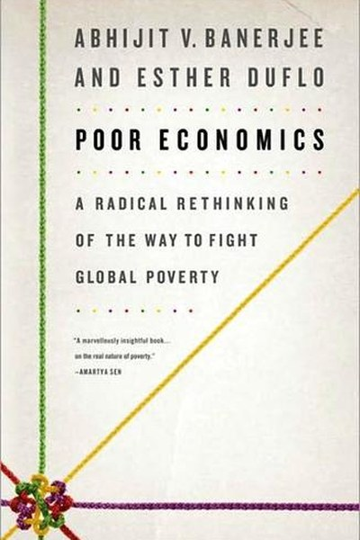

Library › Money & Finance
Poor Economics — Summary & Key Lessons

The radical rethink of how to fight global poverty — with data, not dogma.
📖 OPEN THE FULL INTERACTIVE BREAKDOWN →🌐 Read it in Hindi, Hinglish, Gujarati, Tamil & 22 more languages — free, with audio.
💡 The Big Idea
The poor are not passive victims of big forces — they make rational decisions under brutal constraints: no buffers, no information, no safety nets. Banerjee and Duflo's method: stop arguing grand theories and run randomized experiments on small problems — deworming, mosquito nets, microcredit, school meals. The result: a thousand little fixes that work, and a devastating critique of both free-market and state-centric dogmas.
🧠 The 7 Key Lessons
Lesson 1: Poverty Is a Bundle of Small Problems
Thinking Again
Banerjee and Duflo reject both 'poverty is destiny' and 'poverty is just laziness'. Instead they break poverty into concrete, addressable problems: disease, education, credit, risk, politics. The lesson: big problems are solved by decomposing them, not by cursing them. The same applies to personal challenges — 'I'm poor', 'I'm stuck' are useless framings; 'my rent eats 60% of income' is a problem you can attack.
📖 Example: The authors show how a single intervention — free deworming pills costing a few rupees — kept millions of children in school longer, because sickness was quietly destroying attendance. Read the full example →
⚡ Do this: Take one problem in your life and break it into three smaller, measurable problems you could actually attack this quarter.
Lesson 2: The Poor Are Rational — Under Brutal Constraints
The Poor as Rational Actors
The book's core defence: the poor make sensible choices given their reality — no savings buffer, no information, high stakes on every decision. Buying expensive but tasty tea instead of cheap nutritious food is not stupidity; it is a small pleasure that makes a brutal life bearable. The lesson: before judging anyone's decisions, examine their constraints. Behaviour you call irrational is often rational given different information and risk.
📖 Example: Farmers who underuse fertilizer aren't lazy — the timing and cash-flow constraints make it genuinely hard to buy it at the right moment, even when it clearly pays. Read the full example →
⚡ Do this: Identify one 'bad' habit of yours or someone else's. List the constraints that make it rational, then design around the constraint instead of blaming the person.
Lesson 3: Prevention Beats Cure — If It's Cheap and Easy
Health
The authors found that people avoid cheap preventive health measures (chlorine, bed nets, deworming) not because they don't value health but because prevention's payoff is invisible and delayed. The lesson: make good behaviour automatic and default — remove the decision entirely. Free chlorine at the water source beat subsidized chlorine at the shop. Design your environment so the right choice is the easy choice.
📖 Example: In Kenya, deworming was nearly free and transformed school attendance — yet parents wouldn't buy the pills; when treatment was given free at school, participation skyrocketed. Read the full example →
⚡ Do this: Choose one healthy behaviour you keep 'deciding' to do. Remove the decision: pre-pay, pre-schedule, or make the default version the healthy one.
Lesson 4: Education Fails at the Margin of Effort
Education
Their research showed that building schools and hiring teachers did little, while teaching at the child's actual level — not the curriculum level — transformed learning. The lesson: inputs are not outcomes. More resources poured into a broken method don't fix it. The same is true of personal learning: studying the syllabus you've already mastered is comfort; working at the edge of your ability is growth.
📖 Example: The famous 'teaching at the right level' experiments — grouping children by level, not age — produced learning gains far bigger than any teacher-salary increase. Read the full example →
⚡ Do this: Identify one skill where you're 'studying' without improving. Drop the material you've mastered and work at the edge of your ability for 30 days.
Lesson 5: Microcredit Helps — But It's No Miracle
Credit and Savings
The authors' randomized trials found microcredit had real but modest effects — it didn't create millions of entrepreneurs. What mattered more: safe savings products and commitment devices. The lesson: access to capital is necessary but not sufficient; the ability to save safely and commit to a plan moves the needle more. Tools that force future-you to keep promises beat willpower every time.
📖 Example: Simple commitment savings accounts — where you can't withdraw until a goal date — increased savings dramatically in the Philippines, more than higher interest rates did. Read the full example →
⚡ Do this: Create a commitment device for one financial or personal goal: automatic deduction, a lock-in account, or a penalty for breaking the plan.
Lesson 6: Risk Is the Poverty Trap — Insurance and Buffers
Managing Risk
The poor live one shock away from ruin — an illness, a wedding, a bad harvest. Without insurance or savings, they make low-risk, low-return choices that keep them poor. The lesson: the biggest barrier to growth is not lack of ambition but lack of buffer. Build slack — emergency funds, skills that transfer, relationships that help — before chasing returns. Safety is what makes risk-taking rational.
📖 Example: Farmers who could not risk new seeds or crops — because failure meant hunger — never adopted the innovations that would have raised their incomes. Read the full example →
⚡ Do this: Build your own buffer: calculate one month of essential expenses and automate saving toward it before any new 'investment'.
Lesson 7: Evidence Beats Ideology
The Method
The book's greatest lesson is methodological: instead of choosing between capitalism and socialism, test what works. Randomized trials turn politics into engineering. The lesson for everyday life: prefer experiments over opinions. When someone tells you 'this always works' or 'this never works', ask for evidence — and run your own small test. Data over dogma is not just for economists.
📖 Example: The authors' RCTs overturned cherished beliefs on both the left (free markets fix everything) and the right (aid is useless) — with actual numbers. Read the full example →
⚡ Do this: For your next important decision, design a cheap 2-week experiment with a clear success measure instead of relying on gut or hearsay.
✅ 5-Step Action Plan
- Decompose one big problem into three attackable pieces.
- Design your environment so the right choice is the default.
- Work at the edge of your ability for 30 days on one skill.
- Create one commitment device that forces future-you to keep a promise.
- Build a one-month emergency buffer before chasing returns.
💬 Best Quotes from Poor Economics
- “The poor seem to be trapped by the same problems as everyone else — except they have no margin for error.”
- “It is possible to make progress against poverty without a grand theory.”
- “Small changes can have big effects, if they are the right changes.”
Interactive version: mark lessons as read, listen in your language, share quote cards.